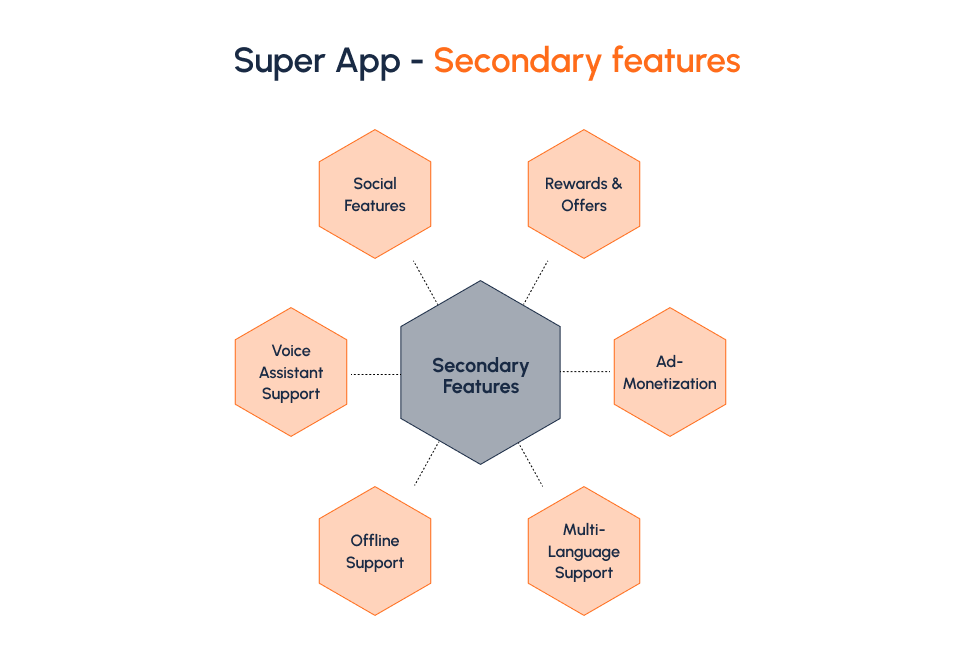

With more and more people using their smartphones for everyday tasks, businesses are looking for new ways to enhance user experience. This is achievable by Super App development where users can rely on one single application and get access to multiple services all under one roof.
Unlike the traditional approach, you don't have to open a specific app for shopping, payment, and fetching delivery details when it comes to the Super app. Super App will function as a one-stop solution from which you can share messages, make payments, shop online, access media, and more.
Businesses are transforming their traditional apps into Super Apps as this acts as an all-in-one platform where users need not switch between different apps. Rather, Super Apps lets them access all of the services under one roof. This not only enhances user convenience but also boosts engagement and loyalty. This article explores why Super Apps development is a game changer and is seen as the future of digital services.
Super App Development - A Leap Beyond the Regular Apps
Super App functions way more than regular apps. Hence the development of the Super App involves careful planning and a deeper understanding of the preference. Despite this, Super App development requires strong integration and robust architecture for seamless functioning across different services.
Super App developers must have strong knowledge and prioritize modular development, API integration, security frameworks, and scalability possibilities during the development. Developers need to ensure that the Super App provides a personalized user experience with a simple-to-navigate interface.
What is Super App Development?
Super App development is a process of creating an all-in-one app that supports multiple services under one ecosystem. i.e., integrating more than one service into one platform.
With Super App, the process of installing multiple apps and launching them when needed gets eliminated totally. This makes digital interactions from the user end more efficient, convenient, and smoother. Super Apps are making life easier as they hold everything in one place, take up less storage, eliminate installing multiple apps, and provide better engagement with unified data. Thus building a highly scalable architecture for a super app ensures performance consistency despite it is been used by lots of users and services running concurrently.
Step-By-Step Process of Super App Development
In order to begin with a Super App Development process, certain prerequisites should be met and are as follows.
1. Solid understanding of Android/iOS mobile app development using languages like Java, React Native, Swift, etc.
2. Skills to connect different services/apps using API's.
3. Clear understanding of the payment systems, gateways, and how the transactions work.
4. Familiarity with using the relational database (MySQL) or NoSQL (MongoDB/Firebase).
5. Experience in UI/UX designing to create a simple and user-friendly interface.
6. Understanding of different security protocols like 2FA, OAuth, encryption, etc.
The foremost thing in developing a Super App is to look for the user requirement and how to satisfy it. The process also involves finding user behaviors, pain points, and competitor analysis. With this done, a proper plan should be created and find out how businesses can deliver it.
It is vital to decide on the core service that the Super App is about to deliver. So, ensure to choose if it is payments, shopping, social, or anything in between. Make sure the service chosen integrates with your business model and when implemented offers great support to the user.
As Super App is developed to handle more than one service, selecting the right technology is important for a smooth operation. So, care must be taken while choosing frontend, backend, and API integration. This ensures the app performs without lags even during high traffic. Some of the super apps tech include Microservices architecture, GraphQL/REST APIs, AI/ML integration for personalization, etc. These technologies are all about building scalable, flexible, and intelligent systems.
A Super App's primary purpose is to make navigation easier. Hence developers intend to create a user-friendly Super app design with a clean layout. This helps users stay engaged and find what's needed without confusion.
It is better to launch a part of the Super App instead of creating a fully functional app. This is called the first version or Minimum Viable Product (MVP). As a result, businesses can test the app with real-time users and make improvements before making it fully functional. This saves not just time and money but opens up the possibility of looking at what is actually needed in the Super App.
Not every other feature needs to be built from scratch when it comes to the Super app. Developers can integrate third-party services to access the required features such as payment gateways, AI chatbots, location services, and so on. With this, the development time is highly reduced while the user interface gets improved in a short duration.
Super app is usually meant to deal with a large set of user data. Hence, the platform should be secured and this can be achieved through the inclusion of encryption, authentication, and compliance with data protection laws. Any app including the Super App development should consider scalability as a major factor. This is because when more users join, the app should handle the load without crashing or loading.
When the Super App development is done, it should be tested before making it available for the user. With this, the existing bugs, issues, and the user enhancements needed further shall be identified and the needful can be done. Optionally, prior to the original release, a beta version can also be released to a select group of users, and with the obtained feedback, improvements can be made.
A Super App development doesn't end with launching. Rather, the app will be constantly updated with a new version that fixes the ongoing issues with the current version. The updated version may also hold new features and services. With this, the Super App will stay ahead of competitors and future-proof.
A Brief Classification of the Types of Super Apps & Use Cases
Super Apps are classified into five major types based on the core service. They are as follows
E-commerce apps are one of the classifications of Super apps. Consider Amazon, Myntra, etc., as examples. While these are basically shopping or e-commerce apps, they include services like payments, logistics, financial services, etc. Thus, these apps allow users to shop, pay, and track orders without relying on multiple apps.
The best example of Super Apps classified under Financial service includes Alipay. It works basically as a payment platform that lets users send and receive money. However, it comes under the Super App classification as you will find services like e-commerce, ticket booking, bill payment, social networking, etc.
Grab and Gojek are some examples that come under Super App development classified under lifestyle and on-demand service. These platforms include services like food delivery, home service, transportation, etc., under one platform. These apps will allow users to book rides, order food, and make payments without using different apps.
With social media or communications apps like WeChat, users can message, shop, share content, and do more. Such apps are classified under Super Apps as they act as a digital hub allowing users to chat, purchase, order food, and make payments.
Consider Microsoft Teams as an example of a Super App classified under the enterprise section. It is designed for businesses and professionals to chat, collaborate, manage tasks, and stay productive. Meanwhile, you will find it integrated with cloud storage, financial tools, and other services.
Salient Features of Super Apps
The salient features that can be expected from the Super App include the following.
1. Unified Login - Users can access more than one service with one login.
2. Multi-Service Integration - Offers multiple service integrations under one roof.
3. AI-Powered Personalization - With user behaviors, Super Apps offers personalized recommendations.
4. Multi-Payment Options - Offers seamless payment and wallet transaction options.
5. Robust Security - Keeps user data safe and secured with end-to-end encryption and multi-factor authentication.

Know the Benefits of Super App Development
The following are the key advantages involved in the Super App development.
1. Opting to an on-demand super app development services helps businesses deliver real-time, multi-service experiences. Users will spend more time exploring different services under one platform. This increases longer sessions and higher retention.
2. Supports multiple ways to generate revenue in the form of in-app purchases, subscriptions, premium features, etc.
3. With one integrated ecosystem, businesses can deliver multiple services thus saving development time and cost.
4. Builds strong brand trust and loyalty as users rely on one app for their daily activities from chatting to shopping and making payments.
5. Super Apps offers a competitive advantage and stays ahead of the competition as it performs as a single-purpose app.
Challenges and Considerations in Super App Development
Anything best in the market does come with challenges and so does the Super Apps.
1. Super App architecture is complex and thus requires careful planning, integration, and backend infrastructure support.
2. It involves higher development costs that include design, security, cloud infrastructure, API integration, etc.
3. As Super Apps deals with sensitive user data, compliance with laws and regulations is crucial.
4. The app should stay simple, intuitive, and user-friendly without overwhelming the users.
5. Managing and optimizing performance is important to handle higher traffic, resources, and real-time data.
Best Super Apps Examples in the Market - Success Stories
Tabulated below is the list of Super Apps that are globally renowned and serve different purposes.
| Super App | Region | Key Services |
|---|---|---|
| China | Messaging, payments, social media, e-commerce, mini-programs | |
| Gojek | Indonesia | Ride-hailing, food delivery, logistics, financial services |
| Alipay | China | Payment gateway, investments, insurance, e-commerce |
| Careem | Middle East | Transport, food delivery, e-wallet |
| LINEline | Japan, Thailand | Chat, digital payments, shopping, entertainment |
| Grab | Southeast Asia | Ride-hailing, food delivery, digital payments, financial services |
| Rappi | Latin America | Food delivery, grocery shopping, ride-hailing, financial services |
Super App Development Cost - Factors to Consider
The cost of a Super App development varies based on a number of factors and the Super App development company you hire. The factors contributing to the Super App development cost include
- The complexity of the app, say, no.of.services and features
- Native or cross-platform development
- Third-party services integration
- The development team and the location
- Maintenance and feature enhancements
The estimated cost for a Super App development will fall anywhere between $50,000 to $5000000 based on the above factors.
Why Hire a Skilled Super App Developer for your Business?
It is vital to hire a proficient Super App developer team to create a high-performing and user-friendly Super App. A skilled developer ensures flawless execution, integration, user-friendly design, and maintenance support. A well-built Super App developer ensures it features robust security and seamless third-party integration.
Above all, a professional developer from a multiservice app development company makes sure the development process is streamlined which saves time and resources. The best team should utilize the following tools in the Super App development lifecycle.
1. Flutter, React Native, Swift, or Kotlin for Frontend Development
2. Node.js, Python, Java, and .NET for Backend Development
3. MySQL, MongoDB, and Firebase for Database Management
4. WS, Azure, or Google Cloud for Cloud Interface
5. GDPR, PCI DSS, and encryption protocols for Security and Compliance.
Hiring the right developer for your Super App development not only prevents costly mistakes but also ensures the long-term stability of the app.
Conclusion
Super app Development services are definitely seen as a digital transformation as they are enhancing user interactions and redefining convenience. Unlike traditional apps, Super Apps will work as an all-in-one platform offering multiple services under a single ecosystem. Hence, users need not install or launch multiple apps but rather access those services under a single source called Super App.
Undoubtedly, Super Apps are not just convenient but are seen as a revolution as they are meeting the growing user demands. While its development is a complex process, the right outcome is achievable by hiring skilled developers who can make it a secure, high-performing, and scalable solution. The demand for Super App development not only enhances brand visibility but also increases the scope of your businesses in the digital world.
CO-Founder
Yokesh Sankar, Co-Founder and Chief Operating Officer of Sparkout Tech Solutions, leverages his expertise to drive innovation and operational excellence in the software industry. Passionate about empowering individuals with essential skills, he uses technology to streamline business processes and enhance efficiency. He advocates for AI and blockchain adoption, helping businesses integrate these technologies seamlessly into their operations. Staying ahead of AI trends, Yokesh explores industry applications and shares insights to foster growth and knowledge in the tech sector.